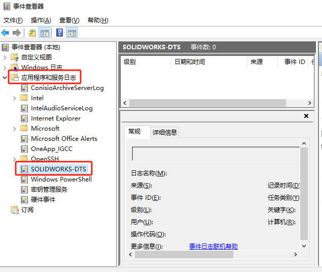
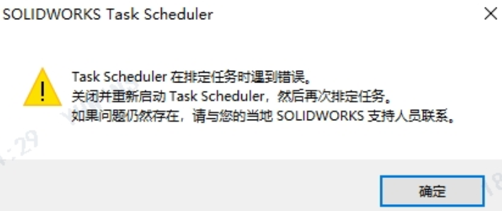

SW-TaskScheduler
简介
使用
转换文件
将 SOLIDWORKS 早期版本的文件转换到当前版本。
Upgrade Assistant
迁移到新版本的 SOLIDWORKS，则可以使用 Upgrade Assistant 来测试您的零件、装配体和工程图的迁移
更新文件
任务会以自上次重建模型后所作的任何更改重建指定的文档。
更新相关的文件
更新 SOLIDWORKS 文档及其参考引用的文档
打印文件
输入文件
输出文件
更新自定义厘性
生成工程图
转换到高品质视图
运行自定义任务
生成 eDrawings
更新 Simulation
Design Checker
渲染和动画
创建 ECAD 文件
Q&A
命令消失
只剩“转换文件”，“update assistant”
方法：修复安装
日期问题
1、检查电脑地区和系统日期
2、修复您的 SOLIDWORKS 安装。
无法运行
如果尚未激活 SOLIDWORKS软件。可能会出现“无法运行 SOLIDWORKS”状态时，任务会失败。要避免此问题，请先运行 SOLIDWORKS 软件并激活许可证，确保软件正常启用，然后再使用 SOLIDWORKS Task Scheduler。
日志
在【开始/菜单-Windows管理工具-事件查看器】找到应用程序和服务日志，里面有SOLIDWORKS-DTS项。
遇到错误
什么原因可能会导致 Task Scheduler 失败，并显示消息“… 在排定任务时遇到错误。请关闭并重启 Task Scheduler，然后再次排定该任务”，应当怎么办？
方法
可能是 SolidWorks 安装中的 Task Scheduler 数据库 ( \swScheduler\swbo1_new.db) 已损坏，或者与当前版本不兼容。
如果在 SolidWorks 升级期间安装程序未正确替换 .db 文件，则可能会发生此错误。
1.从用户的应用程序数据目录中删除 swScheduler_xx 文件：
1 | C:\Users\ <用户名> \AppData\Roaming\SolidWorks 20xx\swScheduler_xx\ |
2.用其他计算机中“正常”文件(swbo1_new.db) 替换。或修复安装SolidWorks，重新安装正确的文件。